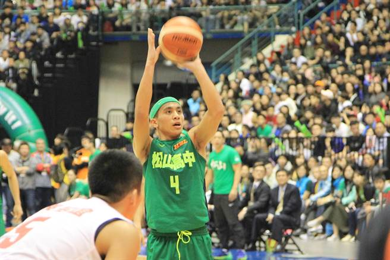

Introduce of HBL
我最喜歡的隊伍－松山高中
三年獲得兩次MVP的唯一一位球員－高國豪
始終以綠色為代表色，一直以來以防守著稱的綠色神盾──台北市立松山高中
" Do our best ! "是每一個松高球員在每場賽前所喊出的一種對自己的承諾。
這句話有著教練對他們的深切期許，期許他們能克盡己力，為自己更為整個team而努力。

我從2016年的高中籃球聯賽的冠軍賽開始看，其實一開始我連規則都不太清楚，
但越看越喜歡，就慢慢地了解了球場上的大小事。
我喜歡松山，不只因為他們很厲害，更是因為教練。
雖然很多人都稱黃萬隆教練"白髮魔頭"，雖然他真的很嚴格，但這都造就了今天的所有。
去年的冠亞賽，松山高中以八分之差輸給了南山高中。
而今年年初的冠亞賽，又是同樣的隊伍，不同的成員。
我最喜歡的球員，他不是隊長，但是他成為了人人口中的英雄。
松山高中的高國豪轟下全場最高的38分。
在高中3年生涯中，兩度獲得MVP殊榮，成為HBL史上第一個兩度拿下MVP的球員。
因為他，我開始喜歡看籃球相關的比賽。
因為他，我相信所有事情只要努力，就有機會成功。
去年輸的時候，他只說了 "記住這一刻"
我可以想像他有多麼懊悔，卻不能重來的心切。
而在今年拿下冠軍的時候，真的很為他感到高興。

球隊簡介
簡短介紹
現況
高國豪目前在美國的Marshalltown Community College打球
旅美幫
畢業於松山高中的球員總共有4個選手在美國打球
跟高國豪同校的是大他一屆的學長丁聖儒
戰績
在第一場比賽中先發上陣，8投5中包含三記3分球，上場26分鐘內拿下13分8助攻6籃板，球隊以93：63拿下勝利。
第二場比賽中依然先發上陣，8投4中包含兩記3分球，上場29分鐘拿下10分5助攻4籃板1超傑的紀錄。86：72二連勝。
比賽太多了容許我跳過一些 :D
第五場比賽以先發上場26分鐘，12投5中包含三記3分球，全隊次高14分4助攻2籃板2抄截。80：70拿下主場第四勝。
第八場比賽依舊是先發五人的他，上場34分鐘14投4中含三記3分球，是全隊次高的11分5助攻3籃板1抄截。68：72吞下主場第一敗。
感想
台灣跟美國有時差，所以我看直播通常都是早上剛起床的時候。我發現美國人打球的節奏比台灣快的很多，攻守交換的速度快，得分犯規的次數也跟著加速。不像台灣的HBL那樣謹慎出手，而是只要有機會就瞄準籃框出手。高國豪的紀錄也很漂亮，雖然命中率不太高，但有拿下助攻籃板跟抄截的紀錄也夠了。結論！我還是很喜歡看他打籃球。期待他未來的表現。